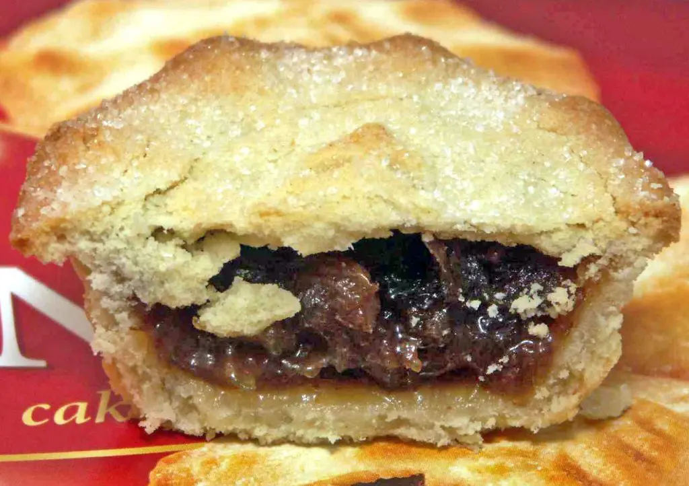
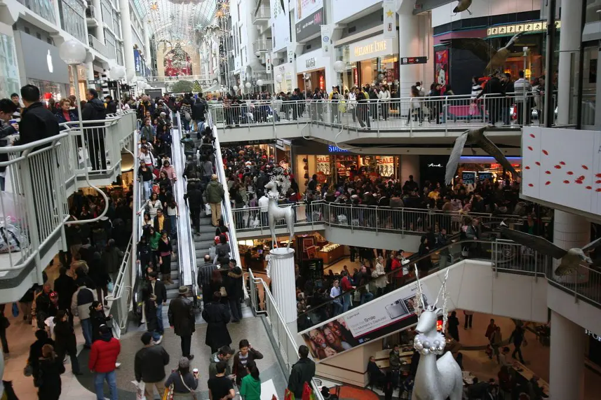

Парад Санта-Клауса в Монреалі
Як святкують Різдво в Канаді? Це питання, яке ми задаємо собі, коли думаємо, що країною Північної Америки є ідеальна обстановка на це свято. Великі простори пишних соснових та ялинових дерев, високі гори та багато снігу характерні для Канади, а також того, що ми всі будуємо в думках, коли уявляємо різдвяний пейзаж. Ось чому канадці святкують Різдво з великим інтересом та відданістю. Для цього вони мають деякі традиції, загальні для решти західних країн, а також інші корінні. Ми покажемо вам, як святкується Різдво Канада.
Індекс
Як святкують Різдво в Канаді: попередні етапи
Перед Різдвом канадці прикрашають свої будинки вогні за кордоном та типове дерево прикрашений всередині. Вулиці також рясніють різдвяними прикрасами. Традиція дерева сягає 1781 року в північноамериканській країні, коли перше дерево було висаджено в місті Квебек. З тих пір цей орнамент став одним з найважливіших елементів Різдва в Канаді. Насправді кажуть, що в ці дати на кожні сім канадців припадає одна ялинка. Також вертепи Вони є класичним елементом канадських фестивалів під впливом європейських колонізаторів, як французів, так і англійців. Це особливо актуально в тому ж районі Квебеку. І так само Різдвяні колядки вони традиційні. Багато груп дітей відвідують будинки, щоб виконати ці пісні і отримують взамін різдвяну премію. Більш цікавими є маски, яких можна побачити на вулицях головних міст, особливо в районі Ньюфаундленду. Вони називаються belsnicklers o ряджені і вони проходять кварталами, дзвонячи в дзвони, щоб сусіди дарували їм солодощі та цукерки.
Різдвяні подарунки
Ви також можете легко знайти Дід Мороз на вулицях усіх канадських міст, особливо біля дверей магазинів та житлових будинків. Більш унікальним і світським є Заправка раковини. Це партія походження Ескімосів в якому канадці співають і танцюють, вітаючи зиму, а також, точно, вшановуючи традиції цього корінного народу. З іншого боку, якщо ви проводите своє перше Різдво в північноамериканській країні, вас вразять трубочки, загорнуті в яскравий кольоровий папір, які, коли ви тягнете їх з обох кінців, відкриваються, показуючи подарунок. Є крекери і вони також є частиною різдвяних звичаїв канадських дітей.
Як вони святкують Різдво в Канаді: вечеря та 25 грудня
Перше, про що слід пам’ятати, коли святкуєш Різдво в Канаді, це те, що 24 грудня магазини вони закриваються о п’ятій чи шостій дня. Тому спочатку слід робити покупки, щоб не поспішати.
Парад Санта Клауса
Крім того, перед вечерею напередодні Різдва в деяких містах вони проводяться паради Санта Клауса так само, як в Іспанії ми робимо кавалькади королів. Ця традиція є класичною Ванкувер, наприклад і, перш за все, з Торонто, де традиція була заснована в 1913 році, що робить її парад одним із найдавніших і найпопулярніших у світі.
Вечеря
Ще одним аспектом, який слід пам’ятати про те, як святкують Різдво в Канаді, є вечеря напередодні Різдва. Сім'ї зустрічаються у своїх будинках, щоб скуштувати це. В півострів Лабрадор існує традиція зберігання предків ріпа які збирають влітку, щоб подарувати їх того дня дітям, які несуть свічку.
Різдвяна вечеря включає Фарширована індичка з картопляним пюре, овочами та журавлинним соусом. Різні продукти розміщуються всередині індички залежно від району країни. Наприклад в Нова Шотландія фарширована морепродуктами, тоді як в Квебек він одягає свине ручне рагу. На десерт у них є пудинг із ізюму або сливи y масляний пиріг, хоча ще одна, виготовлена з фаршем, теж дуже типова. Так само, шоколадні кекси і крижане печиво з какао та цукром. І, щоб випити, смачно яєчний яка також несе молоко та коньяк або віскі. Після вечері і залишивши свою шкарпетки під каміном для Діда Мороза багато канадців також відвідують Опівнічна маса. Але більш цікавою є інша зовсім інша різдвяна традиція, яка існує у всій країні. У ці дати виступи с 'Лускунчик', знаменитий балет, створений Чайковський на основі рахунку Ернст Теодор Амадей Гофман.
25 грудня: подарунки
З іншого боку, 25 грудня канадці вперше отримують подарунки, про які бачить добро Санта Клаус. Однак також часто зустрічається, що вони відкрили принаймні одну напередодні ввечері.
день подарунків
Як і майже у всіх куточках світу, це свято, і сім'ї знову збираються разом є, у багатьох випадках використовуючи те, що залишилося від Святвечора, готують нове меню. Нарешті, 26 грудня, День Святого Стефана, також зазвичай є святом у Канаді. У цьому випадку день подарунків, під час якого даруються подарунки та пожертви тим, хто найбільш потребує. З цієї причини багато магазинів відкриваються і пропонують своїм покупцям знижки.
Свята Катерина та Різдво
Навколо канадського Різдва існує ще одна цікавинка, про яку знають не всі. Раніше різдвяні гуляння розпочались у північноамериканській країні 25 листопада, свято святої Катерини, день, коли дзвінок був зроблений скрізь таффі тягнути, частування, яке надзвичайно розтягується. На закінчення: якщо вам було цікаво, що таке Різдво в Канаді, ви вже можете скласти уявлення про його основні традиції. Вони не настільки відрізняються від наших. Але вони представляють певне примхи як традиція представляти "Лускунчика" та день подарунків. У будь-якому випадку, в наступних статтях ми поговоримо про звичаї канадців у Росії Святвечір або Новий рік доповнити всю цю інформацію.